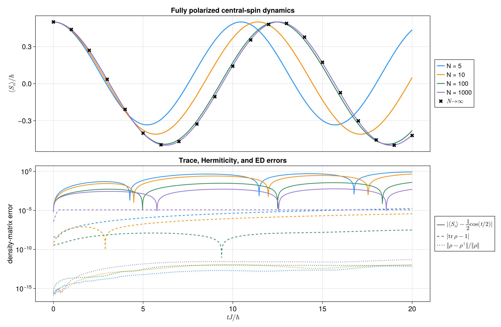

Central-spin dynamics using ACE
A central spin coupled to many microscopic bath spins is one of the simplest models in which an environment is both genuinely many-body and strongly non-Markovian. The bath spins do not interact with one another directly. Instead, each of them talks to the same central spin, so information deposited in the bath can later return to the system.
This example follows the fully polarized central-spin benchmark used by Cygorek et al. to demonstrate Automated Compression of Environments (ACE). We first build the microscopic system and bath mode by mode, then let ACE combine those independent mode influences into a single process tensor.
The larger $N=5,10,100,1000$ comparison and the bond-dimension scaling figure are generated by scripts/central_spin_ace.jl.
The central-spin model
We consider one spin-$1/2$ system, $\mathbf S$, coupled isotropically to $N$ bath spins $\mathbf s_k$. In the benchmark there is no free system or bath Hamiltonian,
\[H_S = 0, \qquad H_B = 0,\]
and all dynamics comes from the central-spin interaction
\[H_{\mathrm{int}} = \sum_{k=1}^{N} J_k \left( S_x s_k^x + S_y s_k^y + S_z s_k^z \right), \qquad J_k=\frac{J}{N}.\]
We use the natural units of the benchmark, $J=\hbar=1$. Dividing the coupling by $N$ is important: adding more bath spins refines the collective environment without simply making the total interaction $N$ times larger.
The central spin begins along $+x$,
\[\rho_S(0)=|+\rangle_x\langle+|,\]
while every bath spin is polarized along $+z$,
\[\rho_B(0) = \bigotimes_{k=1}^{N} |\uparrow\rangle_k\langle\uparrow|.\]
This is already enough to produce non-trivial dynamics. The $+x$ state is a superposition in the $z$ basis, and the exchange part of the isotropic coupling allows the central spin and bath to exchange angular momentum. Consequently $\langle S_x(t)\rangle$ oscillates even though both $H_S$ and $H_B$ vanish.
As $N$ grows, each individual coupling $J/N$ becomes weaker and the finite-size bath approaches the collective large-$N$ response. For this normalization the analytical limiting curve is
\[\frac{\langle S_x(t)\rangle}{\hbar} \longrightarrow \frac{1}{2}\cos\!\left(\frac{tJ}{2\hbar}\right).\]
The companion benchmark will show this convergence directly.
Build one modest bath
This example uses a small bath and a short process tensor so that both ACE construction and $evolve$ stay cheap. The companion script uses the paper timestep $dt=0.01$ out to $t=20$.
using Logging
using Printf
using ITensors
using ITensors.Ops: Trotter
using ProcessTensors
function one_site_density_matrix(ρ)
tensor = foldl(*, ρ)
site = only(
filter(
index -> plev(index) == 0 && hastags(index, "Site"),
inds(tensor),
),
)
return ComplexF64.(Array(tensor, prime(site), site))
end
const N_bath = 5
const J = 1.0
const dt = 0.2
const nsteps = 20
const final_time = (nsteps - 1) * dt
const ace_cutoff = 1e-8
const ace_maxdim = 3232Empty free Hamiltonians are intentional in this benchmark. We want the central spin particle to be free and through the bath spins, experience an effective magnetic field trying to polarise it.
system_sites = siteinds("S=1/2", 1)
system = with_logger(NullLogger()) do
spin_system(system_sites, OpSum())
end;The initial central spin points along +x.
initial_density = to_dm(MPS(system_sites, ["+"]));Each bath spin is represented as one independent ACE mode. The mode has no free Hamiltonian, starts in |↑><↑|, and carries its own system-mode coupling.
bath_sites = siteinds("S=1/2", N_bath)
bath_liouville_sites = liouv_sites(bath_sites)
mode_coupling = J / N_bath
modes = with_logger(NullLogger()) do
[
let
initial_mode_density = to_liouville(
to_dm(MPS([bath_sites[k]], ["Up"]));
sites=[bath_liouville_sites[k]],
)
coupling = OpSum()
coupling += mode_coupling, "Sx", 1, "Sx", 2
coupling += mode_coupling, "Sy", 1, "Sy", 2
coupling += mode_coupling, "Sz", 1, "Sz", 2
spin_mode(
[bath_liouville_sites[k]],
OpSum(),
initial_mode_density;
coupling=coupling,
)
end for k in 1:N_bath
]
end;There are deliberately no bath-bath terms here. The modes are independent before they are combined by ACE; their only communication is mediated by the central spin.
bath = spin_bath(modes);
println("Central-spin ACE setup")
@printf(" bath spins: %d\n", N_bath)
@printf(" coupling per bath spin J/N: %.6f\n", mode_coupling)
@printf(" timestep dt: %.3f\n", dt)
@printf(" final time: %.1f\n", final_time)
@printf(" snapshots: %d\n", nsteps)
@printf(" ACE cutoff: %.1e\n", ace_cutoff)
@printf(" ACE maxdim: %d\n", ace_maxdim)Central-spin ACE setup
bath spins: 5
coupling per bath spin J/N: 0.200000
timestep dt: 0.200
final time: 3.8
snapshots: 20
ACE cutoff: 1.0e-08
ACE maxdim: 32
Compress the environment into a process tensor
If we propagated the complete system-bath density matrix directly, the bath Liouville space would grow as $4^N$. ACE avoids carrying that full object. Instead, it constructs the influence of one bath mode at a time, joins those influences along the temporal direction, and truncates the resulting temporal bonds after each combination.
The object returned below is therefore not a bath trajectory. It is the multi-time map seen by the central spin after the microscopic bath spins have been eliminated.
We use symmetric second-order splittings for the system-mode propagation and for combining mode process tensors.
build_time = @elapsed begin
process_tensor = build_process_tensor(
system;
method=ACE(cutoff=ace_cutoff, maxdim=ace_maxdim),
environment=bath,
dt=dt,
nsteps=nsteps,
sys_alg=Trotter{2}(),
combine_alg=Trotter{2}(),
)
end
println(process_tensor)20-step ProcessTensor{SpinSystem, SpinBath} | dt=0.2 | t_final=4.0 | maxlinkdim=13
system: SpinSystem(nsites=1, dissipative=false)
environment: SpinBath(nmodes=5, D_bath=1024, coupling=true)
core: MPO{Liouville}(length=20, linkdims=[4, 9, 11, …, 9])
The temporal bond dimension tells us how much information ACE had to retain between neighboring times. It is therefore also a useful numerical diagnostic of the compressed environmental memory.
max_pt_bond = maxlinkdim(process_tensor)
@printf(" maximum PT bond dimension: %d\n", max_pt_bond)
@printf(" PT build time: %.3f s\n", build_time)
@assert max_pt_bond < ace_maxdim maximum PT bond dimension: 13
PT build time: 8.598 s
Evolve the central spin through the process tensor
The expensive environmental calculation is now finished. Applying the process tensor to $rho_S(0)$ produces the reduced central-spin trajectory without explicitly restoring the bath degrees of freedom.
evolution_time = @elapsed begin
trajectory = evolve(process_tensor, initial_density)
end
Sx_matrix = ComplexF64.(
Array(
op("Sx", system_sites[1]),
prime(system_sites[1]),
system_sites[1],
),
)
spin_x = Float64[]
trace_errors = Float64[]
for ρ in trajectory.states_hilbert
ρ_matrix = one_site_density_matrix(ρ)
trace_value = tr(ρ_matrix)
push!(
spin_x,
real(tr(Sx_matrix * ρ_matrix) / trace_value),
)
push!(trace_errors, abs(trace_value - 1))
end
max_trace_error = maximum(trace_errors)
@assert all(isfinite, spin_x)
@assert all(value -> -0.5 - 1e-3 ≤ value ≤ 0.5 + 1e-3, spin_x)
@assert max_trace_error < 1e-3
println("Central-spin trajectory diagnostics")
@printf(" <Sx>(0): %.6f\n", first(spin_x))
@printf(" <Sx>(t_final): %.6f\n", last(spin_x))
@printf(" maximum trace error: %.3e\n", max_trace_error)
@printf(" trajectory evolution time: %.3f s\n", evolution_time)Central-spin trajectory diagnostics
<Sx>(0): 0.497004
<Sx>(t_final): -0.226618
maximum trace error: 2.736e-04
trajectory evolution time: 0.003 s
From one process tensor to the benchmark
Repeating exactly the same construction for larger $N$ gives the upper panel below. The finite baths $N=5$ and $N=10$ visibly oscillate at a shifted frequency, while $N=100$ and $N=1000$ lie almost on top of the analytical $N\rightarrow\infty$ result, shown as sparse ED crosses. The convergence is especially satisfying because nothing about that limiting curve was inserted into ACE: it emerges from combining the microscopic spin modes.
The lower panel reports the corresponding density-matrix diagnostics on a logarithmic scale: the trace error, the Hermiticity defect, and the deviation of $\langle S_x\rangle$ from the $N\rightarrow\infty$ ED curve. Colors match the $N$ values in the upper panel.

The benchmark uses $dt=0.01$ and an ACE truncation threshold of $10^{-10}$. The remaining approximations are the second-order Trotter splitting and the finite process-tensor bond truncation. A convergence check should reduce $dt$, tighten the ACE cutoff, and increase $maxdim$ until the observable of interest is unchanged.
- The central-spin benchmark contains no free system or bath dynamics; all reduced dynamics comes from the isotropic $S\cdot s_k$ coupling.
- A fully $+z$-polarized spin bath can be assembled transparently from independent
SpinModeobjects with $J_k=J/N$. - ACE eliminates those microscopic bath spins and stores their complete multi-time influence as a temporally compressed process tensor.
- Increasing $N$ drives the finite bath toward the analytical $N\rightarrow\infty$ central-spin oscillation. Trace and Hermiticity errors stay small, while the deviation from the ED curve falls with $N$.
- Once built, the same process tensor can be reused with different system preparations and later with multi-time instrument sequences.